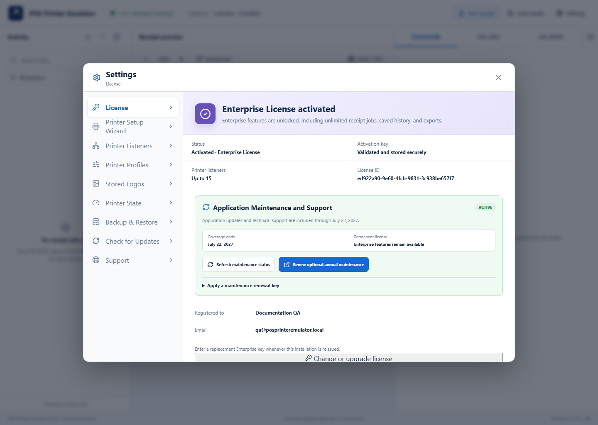
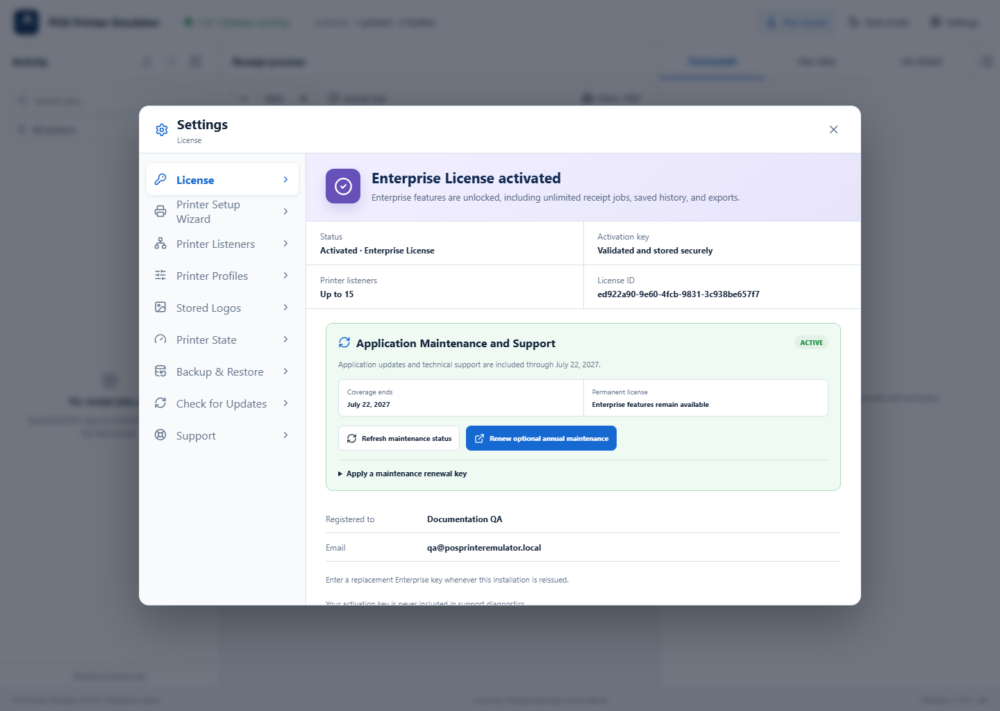

Permanent license: Lite, Pro, and Enterprise are one-time software purchases. Annual maintenance is optional and controls future updates and assisted support—not continued use of purchased features.
1Open License settings
Select Settings → License. The page shows the current tier, secure activation status, listener allowance, registration, and maintenance coverage.

2Activate or change a license
On a Trial installation, enter the exact customer or company name, email address, and activation key supplied after purchase. On a paid installation, select Change or upgrade license. Then select Validate and activate. No reinstall is required.

3Review maintenance coverage
The maintenance card shows whether Check for Updates and assisted support are active. Use Refresh maintenance status after renewing. A renewal key can also be applied from this card.

License tiers at a glance
- Trial: five emulated jobs per day, current-session history only, watermark, and premium features locked.
- Lite: paid features with one Printer Listener.
- Pro: paid features with up to two Printer Listeners.
- Enterprise: enterprise features with up to 15 Printer Listeners.
If activation does not work
- Copy the complete key without adding spaces or line breaks.
- Use the customer name and email address issued with that key.
- Open Settings → Support to run local diagnostics; these tools remain available even when activation or maintenance is unavailable.